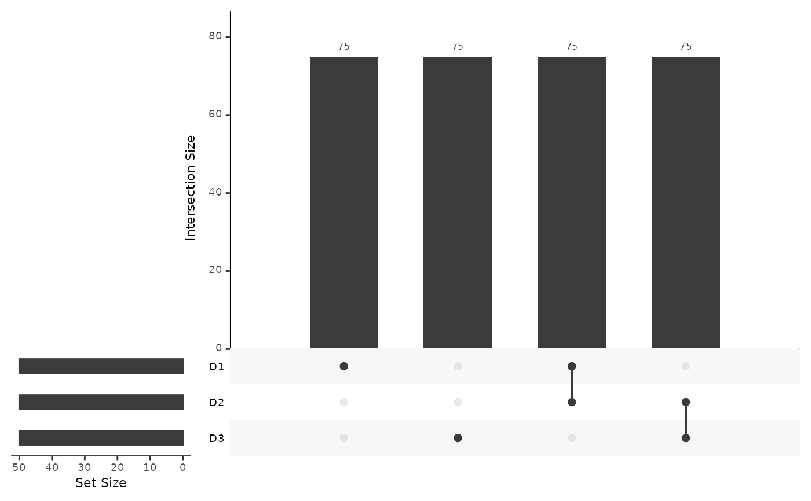

Stabilised mosaic single cell data integration using unshared features
Source:R/stabMap.R
stabMap.RdstabMap performs mosaic data integration by first building a mosaic data topology, and for each reference dataset, traverses the topology to project and predict data onto a common principal component (PC) or linear discriminant (LD) embedding.
Usage
stabMap(
assay_list,
labels_list = NULL,
reference_list = NULL,
reference_features_list = lapply(assay_list, rownames),
reference_scores_list = NULL,
ncomponentsReference = 50,
ncomponentsSubset = 50,
suppressMessages = TRUE,
projectAll = FALSE,
restrictFeatures = FALSE,
maxFeatures = 1000,
plot = TRUE,
scale.center = TRUE,
scale.scale = TRUE,
SE_assay_names = "logcounts",
BPPARAM = SerialParam(),
verbose = TRUE
)Arguments
- assay_list
A list of data matrices with rownames (features) specified.
- labels_list
(optional) named list containing cell labels
- reference_list
Named list containing logical values whether the data matrix should be considered as a reference dataset, alternatively a character vector containing the names of the reference data matrices. If NULL, defaults to: sapply(names(assay_list), function(x) TRUE, simplify = FALSE)
- reference_features_list
List of features to consider as reference data (default is all available features).
- reference_scores_list
Named list of reference scores (default NULL). If provided, matrix of cells (rows with rownames given) and dimensions (columns with colnames given) are used as the reference low-dimensional embedding to target, as opposed to performing PCA or LDA on the input reference data.
- ncomponentsReference
Number of principal components for embedding reference data, given either as an integer or a named list for each reference dataset.
- ncomponentsSubset
Number of principal components for embedding query data prior to projecting to the reference, given either as an integer or a named list for each reference dataset.
- suppressMessages
Logical whether to suppress messages (default TRUE).
- projectAll
Logical whether to re-project reference data along with query (default FALSE).
- restrictFeatures
logical whether to restrict to features used in dimensionality reduction of reference data (default FALSE). Overall it's recommended that this be FALSE for single-hop integrations and TRUE for multi-hop integrations.
- maxFeatures
Maximum number of features to consider for predicting principal component scores (default 1000).
- plot
Logical whether to plot mosaic data UpSet plot and mosaic data topology networks (default TRUE).
- scale.center
Logical whether to re-center data to a mean of 0 (default FALSE).
- scale.scale
Logical whether to re-scale data to standard deviation of 1 (default FALSE).
- SE_assay_names
Either a string indicating the name of the assays for the SummarizedExperiment objects in assay_list or a named list of assay names, where the names corrispond to the names SE objects in assay_list (default "logcounts")
- BPPARAM
a BiocParallelParam object specifying how parallelisation should be performed
- verbose
Logical whether console output is provided (default TRUE)
Value
matrix containing common embedding with rows corresponding to cells, and columns corresponding to PCs or LDs for reference dataset(s).
Examples
set.seed(2021)
assay_list <- mockMosaicData()
lapply(assay_list, dim)
#> $D1
#> [1] 150 50
#>
#> $D2
#> [1] 150 50
#>
#> $D3
#> [1] 150 50
#>
# specify which datasets to use as reference coordinates
reference_list <- c("D1", "D3")
# specify some sample labels to distinguish using linear discriminant
# analysis (LDA)
labels_list <- list(
D1 = rep(letters[1:5], length.out = ncol(assay_list[["D1"]]))
)
# examine the topology of this mosaic data integration
mosaicDataUpSet(assay_list)

plot(mosaicDataTopology(assay_list))
 # stabMap
out <- stabMap(assay_list,
reference_list = reference_list,
labels_list = labels_list,
ncomponentsReference = 20,
ncomponentsSubset = 20
)
#> treating "D1" as reference
#> generating embedding for path with reference "D1": "D1"
#> generating embedding for path with reference "D1": "D2" -> "D1"
#> generating embedding for path with reference "D1": "D3" -> "D2" -> "D1"
#> labels provided for "D1", adding LD components
#> generating embedding for path with reference "D1": "D1"
#> generating embedding for path with reference "D1": "D2" -> "D1"
#> generating embedding for path with reference "D1": "D3" -> "D2" -> "D1"
#> treating "D3" as reference
#> generating embedding for path with reference "D3": "D3"
#> generating embedding for path with reference "D3": "D2" -> "D3"
#> generating embedding for path with reference "D3": "D1" -> "D2" -> "D3"
head(out)
#> D1_PC1 D1_PC2 D1_PC3 D1_PC4 D1_PC5 D1_PC6
#> D1_cell_1 2.6270969 -3.1709928 4.0506445 -3.609130459 1.43056606 -2.5013943
#> D1_cell_2 -4.5057485 0.5752083 0.8340238 -1.014823114 0.63151929 -1.4937527
#> D1_cell_3 0.6226309 -1.5472376 2.6103086 -0.018643114 -2.81536539 -1.0940201
#> D1_cell_4 -4.2263350 -2.0444978 -0.5356968 -3.453648014 2.92566847 0.2716939
#> D1_cell_5 3.8947019 0.9106738 -3.6039996 0.004893567 -2.30739074 -0.3341585
#> D1_cell_6 2.0177813 3.5252245 -4.1753395 -1.148906355 0.05251646 1.8700432
#> D1_PC7 D1_PC8 D1_PC9 D1_PC10 D1_PC11 D1_PC12
#> D1_cell_1 0.24764751 0.5873167 -2.3067376 3.2015090 -0.4526165 -1.2460048
#> D1_cell_2 0.25444661 -0.7616007 -2.4968763 0.1378678 2.8105718 4.8446448
#> D1_cell_3 -0.03710635 1.5760269 -0.3924504 1.1906449 -3.6871124 -3.7681881
#> D1_cell_4 1.69233366 0.7617611 4.8401743 -2.0105921 -1.1875114 -1.5079628
#> D1_cell_5 4.31581421 0.9061911 -0.9850855 1.2802993 -1.6064210 0.3283823
#> D1_cell_6 -3.75335901 -0.4612008 -2.3790983 1.2309207 -2.1421033 -0.9491438
#> D1_PC13 D1_PC14 D1_PC15 D1_PC16 D1_PC17 D1_PC18
#> D1_cell_1 -3.1375299 4.378068 -3.444451 -1.78898621 2.2372443 0.7444908
#> D1_cell_2 -0.7939143 2.721340 -0.377106 -0.09414872 -1.4999731 -4.7338701
#> D1_cell_3 0.4814744 -3.724470 -1.594450 -1.49311501 -1.9097362 -1.1429568
#> D1_cell_4 -3.0741564 1.146310 1.966764 2.49615083 1.8948504 -0.2249584
#> D1_cell_5 -0.2501072 -1.337008 1.229278 -2.45020979 -0.6301791 -1.0275208
#> D1_cell_6 1.9202294 -1.207617 2.005668 -0.81970304 1.8491050 0.7083563
#> D1_PC19 D1_PC20 D1_LD1 D1_LD2 D1_LD3 D1_LD4
#> D1_cell_1 1.2420356 -2.6537437 -0.3927678 -1.674139 -1.1392196 0.01773841
#> D1_cell_2 1.5838926 -0.7553650 1.2724435 0.793653 1.1154764 1.00840563
#> D1_cell_3 -2.0095487 -1.4511791 -1.4536953 1.599853 -0.9361014 0.06013095
#> D1_cell_4 -0.2146626 1.1997056 1.1922330 -1.336241 -0.0218638 0.50445480
#> D1_cell_5 2.5546764 -2.1599689 -1.8890462 -1.191700 -0.1356699 0.66198248
#> D1_cell_6 -1.4360245 -0.1285278 0.1478705 -1.261443 0.7427569 -0.93665942
#> D3_PC1 D3_PC2 D3_PC3 D3_PC4 D3_PC5 D3_PC6
#> D1_cell_1 -5.092261 -8.2508106 -3.425651 0.4690352 -1.364690 2.321041
#> D1_cell_2 -12.595956 -0.2080118 14.737664 6.5019626 -2.625472 5.032621
#> D1_cell_3 11.306185 1.9951329 -19.052218 -7.5799107 4.386649 -7.594878
#> D1_cell_4 23.365322 2.8256687 -6.699824 -3.8222222 12.100088 -2.068096
#> D1_cell_5 3.486375 -1.6333790 -12.325699 -6.0603731 -6.831641 -1.613613
#> D1_cell_6 4.529259 -2.8107622 -5.415551 12.4524323 4.605050 -3.963519
#> D3_PC7 D3_PC8 D3_PC9 D3_PC10 D3_PC11 D3_PC12
#> D1_cell_1 3.8764270 4.0883336 -2.428012 0.777225 2.710615 -2.2746418
#> D1_cell_2 3.6141002 6.0370627 9.409343 7.649837 -7.823011 -0.9906947
#> D1_cell_3 -2.5210622 -4.6332622 -9.397545 -12.032917 10.564143 2.8743073
#> D1_cell_4 -0.1166204 0.9251495 -12.568801 -9.028202 1.519507 -0.4224104
#> D1_cell_5 -7.9823973 -5.9523726 -9.895665 -3.196059 12.193287 0.4332797
#> D1_cell_6 9.7299622 3.6624287 2.562550 2.438239 -2.061845 3.2577935
#> D3_PC13 D3_PC14 D3_PC15 D3_PC16 D3_PC17 D3_PC18
#> D1_cell_1 -0.8287253 2.576194 -1.231400 -2.2388515 1.976501 5.664104
#> D1_cell_2 6.5423034 -7.724872 4.553026 14.3713414 -8.397892 -2.623366
#> D1_cell_3 -7.2103254 13.081504 -4.107559 -17.0461472 10.751740 1.107026
#> D1_cell_4 -9.1727975 -3.286657 -11.690377 -4.8885937 -6.230477 2.364442
#> D1_cell_5 -1.9820459 14.167342 1.655575 -9.5230610 12.926554 2.182250
#> D1_cell_6 -3.3057188 -14.400471 -8.922535 0.4140863 4.918437 -2.660325
#> D3_PC19 D3_PC20
#> D1_cell_1 -1.6946016 -2.072674
#> D1_cell_2 4.6159188 -2.637280
#> D1_cell_3 -7.0317522 5.098998
#> D1_cell_4 0.6198541 -14.316265
#> D1_cell_5 -7.6733369 10.684121
#> D1_cell_6 2.0122155 -5.141146
# stabMap
out <- stabMap(assay_list,
reference_list = reference_list,
labels_list = labels_list,
ncomponentsReference = 20,
ncomponentsSubset = 20
)
#> treating "D1" as reference
#> generating embedding for path with reference "D1": "D1"
#> generating embedding for path with reference "D1": "D2" -> "D1"
#> generating embedding for path with reference "D1": "D3" -> "D2" -> "D1"
#> labels provided for "D1", adding LD components
#> generating embedding for path with reference "D1": "D1"
#> generating embedding for path with reference "D1": "D2" -> "D1"
#> generating embedding for path with reference "D1": "D3" -> "D2" -> "D1"
#> treating "D3" as reference
#> generating embedding for path with reference "D3": "D3"
#> generating embedding for path with reference "D3": "D2" -> "D3"
#> generating embedding for path with reference "D3": "D1" -> "D2" -> "D3"
head(out)
#> D1_PC1 D1_PC2 D1_PC3 D1_PC4 D1_PC5 D1_PC6
#> D1_cell_1 2.6270969 -3.1709928 4.0506445 -3.609130459 1.43056606 -2.5013943
#> D1_cell_2 -4.5057485 0.5752083 0.8340238 -1.014823114 0.63151929 -1.4937527
#> D1_cell_3 0.6226309 -1.5472376 2.6103086 -0.018643114 -2.81536539 -1.0940201
#> D1_cell_4 -4.2263350 -2.0444978 -0.5356968 -3.453648014 2.92566847 0.2716939
#> D1_cell_5 3.8947019 0.9106738 -3.6039996 0.004893567 -2.30739074 -0.3341585
#> D1_cell_6 2.0177813 3.5252245 -4.1753395 -1.148906355 0.05251646 1.8700432
#> D1_PC7 D1_PC8 D1_PC9 D1_PC10 D1_PC11 D1_PC12
#> D1_cell_1 0.24764751 0.5873167 -2.3067376 3.2015090 -0.4526165 -1.2460048
#> D1_cell_2 0.25444661 -0.7616007 -2.4968763 0.1378678 2.8105718 4.8446448
#> D1_cell_3 -0.03710635 1.5760269 -0.3924504 1.1906449 -3.6871124 -3.7681881
#> D1_cell_4 1.69233366 0.7617611 4.8401743 -2.0105921 -1.1875114 -1.5079628
#> D1_cell_5 4.31581421 0.9061911 -0.9850855 1.2802993 -1.6064210 0.3283823
#> D1_cell_6 -3.75335901 -0.4612008 -2.3790983 1.2309207 -2.1421033 -0.9491438
#> D1_PC13 D1_PC14 D1_PC15 D1_PC16 D1_PC17 D1_PC18
#> D1_cell_1 -3.1375299 4.378068 -3.444451 -1.78898621 2.2372443 0.7444908
#> D1_cell_2 -0.7939143 2.721340 -0.377106 -0.09414872 -1.4999731 -4.7338701
#> D1_cell_3 0.4814744 -3.724470 -1.594450 -1.49311501 -1.9097362 -1.1429568
#> D1_cell_4 -3.0741564 1.146310 1.966764 2.49615083 1.8948504 -0.2249584
#> D1_cell_5 -0.2501072 -1.337008 1.229278 -2.45020979 -0.6301791 -1.0275208
#> D1_cell_6 1.9202294 -1.207617 2.005668 -0.81970304 1.8491050 0.7083563
#> D1_PC19 D1_PC20 D1_LD1 D1_LD2 D1_LD3 D1_LD4
#> D1_cell_1 1.2420356 -2.6537437 -0.3927678 -1.674139 -1.1392196 0.01773841
#> D1_cell_2 1.5838926 -0.7553650 1.2724435 0.793653 1.1154764 1.00840563
#> D1_cell_3 -2.0095487 -1.4511791 -1.4536953 1.599853 -0.9361014 0.06013095
#> D1_cell_4 -0.2146626 1.1997056 1.1922330 -1.336241 -0.0218638 0.50445480
#> D1_cell_5 2.5546764 -2.1599689 -1.8890462 -1.191700 -0.1356699 0.66198248
#> D1_cell_6 -1.4360245 -0.1285278 0.1478705 -1.261443 0.7427569 -0.93665942
#> D3_PC1 D3_PC2 D3_PC3 D3_PC4 D3_PC5 D3_PC6
#> D1_cell_1 -5.092261 -8.2508106 -3.425651 0.4690352 -1.364690 2.321041
#> D1_cell_2 -12.595956 -0.2080118 14.737664 6.5019626 -2.625472 5.032621
#> D1_cell_3 11.306185 1.9951329 -19.052218 -7.5799107 4.386649 -7.594878
#> D1_cell_4 23.365322 2.8256687 -6.699824 -3.8222222 12.100088 -2.068096
#> D1_cell_5 3.486375 -1.6333790 -12.325699 -6.0603731 -6.831641 -1.613613
#> D1_cell_6 4.529259 -2.8107622 -5.415551 12.4524323 4.605050 -3.963519
#> D3_PC7 D3_PC8 D3_PC9 D3_PC10 D3_PC11 D3_PC12
#> D1_cell_1 3.8764270 4.0883336 -2.428012 0.777225 2.710615 -2.2746418
#> D1_cell_2 3.6141002 6.0370627 9.409343 7.649837 -7.823011 -0.9906947
#> D1_cell_3 -2.5210622 -4.6332622 -9.397545 -12.032917 10.564143 2.8743073
#> D1_cell_4 -0.1166204 0.9251495 -12.568801 -9.028202 1.519507 -0.4224104
#> D1_cell_5 -7.9823973 -5.9523726 -9.895665 -3.196059 12.193287 0.4332797
#> D1_cell_6 9.7299622 3.6624287 2.562550 2.438239 -2.061845 3.2577935
#> D3_PC13 D3_PC14 D3_PC15 D3_PC16 D3_PC17 D3_PC18
#> D1_cell_1 -0.8287253 2.576194 -1.231400 -2.2388515 1.976501 5.664104
#> D1_cell_2 6.5423034 -7.724872 4.553026 14.3713414 -8.397892 -2.623366
#> D1_cell_3 -7.2103254 13.081504 -4.107559 -17.0461472 10.751740 1.107026
#> D1_cell_4 -9.1727975 -3.286657 -11.690377 -4.8885937 -6.230477 2.364442
#> D1_cell_5 -1.9820459 14.167342 1.655575 -9.5230610 12.926554 2.182250
#> D1_cell_6 -3.3057188 -14.400471 -8.922535 0.4140863 4.918437 -2.660325
#> D3_PC19 D3_PC20
#> D1_cell_1 -1.6946016 -2.072674
#> D1_cell_2 4.6159188 -2.637280
#> D1_cell_3 -7.0317522 5.098998
#> D1_cell_4 0.6198541 -14.316265
#> D1_cell_5 -7.6733369 10.684121
#> D1_cell_6 2.0122155 -5.141146